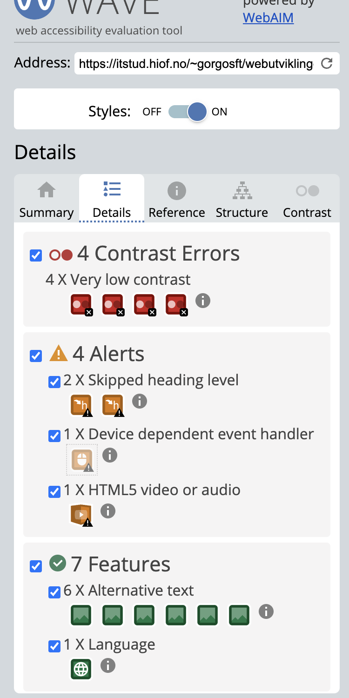

Kontrast
Det første jeg gjøre etter jeg fiksa min SEO og LA jeg min nettside i wedaim også fikk jeg resulat av min nettside.
Jeg starta med å se hva jeg har fått riktig og hva som var feil. Jeg fjerna h5 som har over herder det var feil og jeg synes det var unødendig. etter det så brukte jeg contrast farge til jeg fikk pass på alle fra wedaim. bilde som vises under er en eksempel på det. Så jeg gjøre det med alle steder som Webaim viste meg og da endre jeg farge i koden.

jeg fikk noen problemer da jeg prøvde å fikse på koden. Da måtte jeg endre på alle farger i aside men til slutt så fiksa jeg det.jeg fikk også noen feil å noen linker å sånt men jjeg fiska det. Jeg prøde koden/netsiden min i lighthouse bare for å skjekke om google likte min nettside alt så bra ut .
bildersom vises overpå er eksempel hvordan nettsiden min så ut etter jeg fiksa det.
Hjem